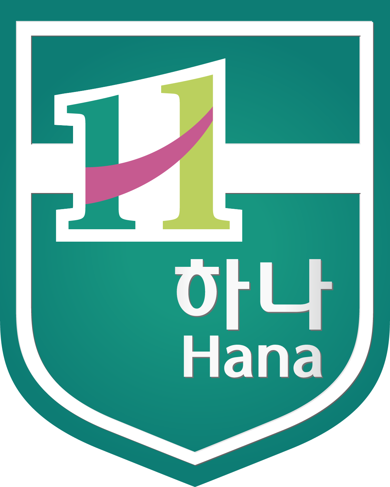
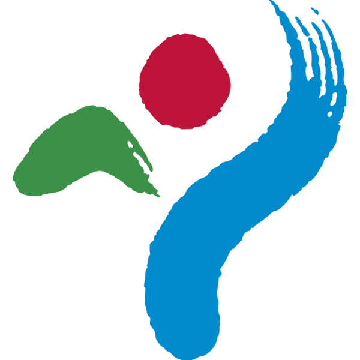

About
Hi! I am Hankyeol Kim, a M.S. student in Industrial Engineering at Seoul National University (SNU), advised by Prof. Pilsung Kang in the Data Science & Business Analytics Lab, and I received my B.S. in Physics and Astronomy from SNU. My past work spanned physics-informed neural networks and LLM; I am now working on spatiotemporal diffusion and visual reasoning of VLM. In the long term, I am pursuing physical AI.
Education
Seoul National University
M.S. in Industrial Engineering
Data Science & Business Analytics (DSBA) Lab. (Advisor: Prof. Pilsung Kang)
Seoul National University
B.S. in Physics and Astronomy

Hana Academy Seoul
Publications
* Co-first author† Corresponding author
Oddin: Latent Visual Reasoning in Unified Multimodal Models via Self-Distillation from Image Generation
Under review · 2026
Work Experience
Lunosoft Inc. · Project Manager
- Druid Rising: Idle RPG
- 2026 Trash King: Idle Tycoon
- Love Revolution: Hidden Object
AIARA Inc.
- Samsung Electronics — Virtual 3D Homescreen & Memory Link
- E-MART — Reward-based web game Emart Farm
- Megastudy Education — Kids’ content Elihigh Kids Character Room
- Megastudy Education — Mystical AR Nature Observation
- Seoul National University Hospital — Long-term follow-up management app for childhood cancer survivors
- LUXROBO — IoT Smart Home on-premises app

SBA SeSAC · Boost Camp Mentor
Service Design
Research Projects
Manufacturing AI Data Value Chain Construction Project
Contextual Bandit–Based Policy Optimization Framework for Insurance Restructuring Strategy Selection and Combination
Data Construction and Optimization for Training/Inference of an Information Retriever
Anomalous Situation Detection Based on Individual Daily Patterns Using Location Information
Other Activities
Physical AI Study Curriculum
I designed our lab's Physical AI study curriculum, which is open to anyone who wants to follow along.
Physical AI curriculumDSBA Lab YouTube · Paper Review Talks
Our lab regularly shares paper-review talks on its YouTube channel.
DSBA YouTube